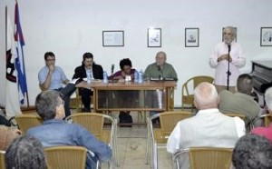

Los retos para la intelectualidad cubana en el actual contexto de la Revolución fueron ampliamente analizados en el primer encuentro del Foro de los Escritores: Taller de Cultura y Sociedad que, como resultado de las propuestas del VIII Congreso de la UNEAC, ha comenzado a organizar la Asociación de Escritores. Esta primera propuesta, realizada en la sala Rubén Martínez Villena la mañana del sábado 17 Janvier, tuvo como moderador a Miguel Barnet, quien estuvo acompañado en la mesa por Abel Prieto, Marta Rojas y el joven historiador Elier Ramírez.
Una idea esencial estuvo presente en todo el proceso reflexivo, desde los diferentes puntos de vista aportados: el importante papel de escritores y artistas cubanos en la lucha contra cualquier estrategia colonizadora en nuestra cultura, aportando ideas y denunciándolos dondequiera que se encuentren. Esta labor cobra especial significado en estos momentos, vísperas del restablecimiento de relaciones diplomáticas con Estados Unidos, cuando la salvaguarda de nuestros valores nacionales y de nuestra cultura se convierte en elemento fundamental para el desarrollo de la Revolución.
“Tenemos que ser hoy más antimperialistas que nunca y convertirlo en algo intuitivo”, señaló Abel Prieto aclarando que no se trataba de ser antiestadounidense, pues en la potencia del norte también se han creado importantes aportes a la cultura universal. “De lo que se trata es de rechazar la sumisión colonial, el anexionismo”, recalcó.

Desde el uso y el abuso de símbolos imperiales en la vida cotidiana —como parte de una oleada universal en este mundo globalizado, en lo que se entiende por “modernidad”—, hasta el desmontaje de nuestra historia por parte de quienes quieren destruir nuestras raíces —fundamentalmente desde el exterior, como parte de la estrategia de subyugar a la Revolución— se analizaron diferentes formas que adopta esta ofensiva cultural colonizante.
Todos expresaron su optimismo y la confianza en que el pueblo cubano, que se ha visto sometido desde mucho antes a esta guerra cultural, sabrá sortear inteligentemente todo aquello que intente apartarlo de su naturaleza. La cultura de resistencia que hemos sabido desarrollar es la que nos ha traído hasta este momento y la que nos ha dado las victorias recientes, pero es un momento de “tener una extrema sensibilidad con la población”, señaló Abel, enfrentar con argumentos y análisis tanto la fascinación por lo extranjerizante y el espíritu colonizador como la retórica, la consigna, la mediocridad y la burocracia.
Miguel Barnet resaltó la importancia de este tipo de encuentros en ese contexto, pues se inserta perfectamente en los objetivos de la UNEAC y sus proyecciones inmediatas, sobre todo en función de lograr una introspección mayor ante las nuevas circunstancias y alcanzar la mesura necesaria, la reflexión y la firmeza en nuestros principios. “Los valores de la cultura, cuando son aprehendidos, son permanentes”, reafirmó.

Profundizó en el escenario que se presenta con los recientes cambios en las relaciones bilaterales con Estados Unidos e indicó que son muchos los desafíos que enfrentará el sector de la cultura en la nueva batalla de ideas que se avecina, donde “la literatura, las artes y el pensamiento son más importantes que nunca”.
D'un autre côté, Marta Rojas reflexionó sobre la importancia de la comunicación y la necesidad de “salvar la lectura”, lograr que se convierta en algo básico para los jóvenes no sólo con el uso de las nuevas tecnologías sino también creando “espacios de conversación”, desde donde pueden salir muchas ideas. Elier Ramírez recordó las características en que se ha desarrollado la nueva coyuntura entre Cuba y Estados Unidos, con sus antecedentes históricos, sus desafíos y oportunidades, donde la cultura se convierte en el principal frente de combate.
Desde el público se aportaron elementos medulares del debate, como la necesidad de priorizar las tradiciones de la cultura popular en contraposición a la avalancha de símbolos extranjeros, incluyendo la música como bastión de la cultura cubana; el conocimiento de la realidad de la sociedad norteamericana, no su visión hollywoodense, y la difusión de los pensadores de izquierda en Estados Unidos; la importancia de repensar la sociedad civil cubana en contra de bloqueos internos, los estilos de trabajo de las organizaciones políticas y de masas y la elaboración y enseñanza de la historia de la Revolución cubana no desde una perspectiva épica o apologética, sino crítica y descolonizada, que profundice en su esencia latinoamericanista, caribeña e internacionalista.

Se reconoció el contexto internacional actual, regido por la hegemonía norteamericana, en el cual la Revolución tiene que continuar resistiendo y defendiendo sus valores y su cultura; la necesaria preparación de nuestros dirigentes ante esta nueva etapa, que incluye enfrentar con audacia el debate, evitar paranoias innecesarias y dar respuestas rápidas a las propuestas que se presenten, siempre desde una perspectiva constructiva y las alertas indispensables. Es un reto que debe enfrentarse con inteligencia, con la fortaleza de tener un pueblo excepcional y una intelectualidad preparada durante décadas en la defensa de la cultura cubana.
Par: Camilo García Lopez-trigo.
Photos: Abel Rojas